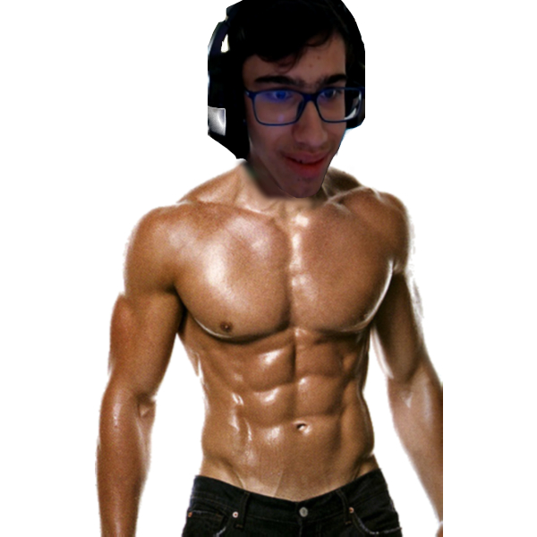

Everybody knows that Eggman is the main villain of the Sonic Franchise. But did you know that he has an IQ of 300?
In this list, we will be counting down our top 10 picks for Doctor Ivo Robotnik.
Number 10
Dr. Robotnik (AoStH)
He has an iconic appearence, and a childish atittude. His 2 best friends are robots that fuck all of his life's work!A genius for his time, Robotnik will do anything to get Sonic! Also he did this...
Number 9
Dr. Eggman (Sonic Boom)
There's nothing to say here, it's just buff Eggman...
Number 8
Dr. Eggman (Post Colors)
This Eggman's rotten! His jokes are fucking lame, and he can't do fucking nothing special. At least his voice is good, and is smarter than Boom Eggman. The only thing Sonic Forces did good was making him intimidating. And by talking of Sonic Forces...
Number 7
Classic Eggman
Yeah, this has nothing to do with Forces. The OG Eggman, tricked Knuckles, built Metal Sonic, and imprisoned a WHOLE FUCKING PLANET! Ok, finally, we are going to end the 5 not-so-good Eggmans, and to end this list, we got...
Number 6
Dr. Eggman (Sonic X)
He's just "Post Adventure 1" Eggman, but worse.
FINALLY, we go to the Top 5, better than the rest of 'em. The best of them, tougher than leather.
Number 5
Dr. Eggman Nega
Coming from either the Sol Dimension or 200 years from the future, he is Blaze's and Silver's arch-nemesis! ... and also the only Eggman that can say the N-Word legally...
Number 4
Rafael Amigo

Born Jack Cyan Fourington in 1921, and possessed by a Demon named El Rafel Amiho in 2007, Rafael Amigo fused with Eggman from another timeline after his eventual defeat in Sonic Forces, and became gifted with his IQ and hatred from Sonic. His hedgehog counterpart, Jack, is his arch-nemesis
Number 3
Dr. Eggman (Sonic Forces)
He finally beat Sonic, and conquered 99.99% of the fucking world. This Eggman succeded. IF ONLY HE KILLED SONIC WHILE HE HAD THE FUCKING CHANCE OMFGEVGFBNEFVIIEFWTFGVWUY
Number 2
Dr. Eggman (VS Sonic.exe 2.0)
NUMBER 1!!!
Dr. Eggman (Post SA1)
This era may be difficult to pin-point, but I'll just classify it as in between SA1 and Unleashed. This Eggman rocks. He tried to nuke a whole town, he blew half of the fucking moon, AND HE BROKE THE EARTH IN 7 PIECES!Surely, this is the most Eggman that Eggman has ever been.Also, I'll leave you with this.